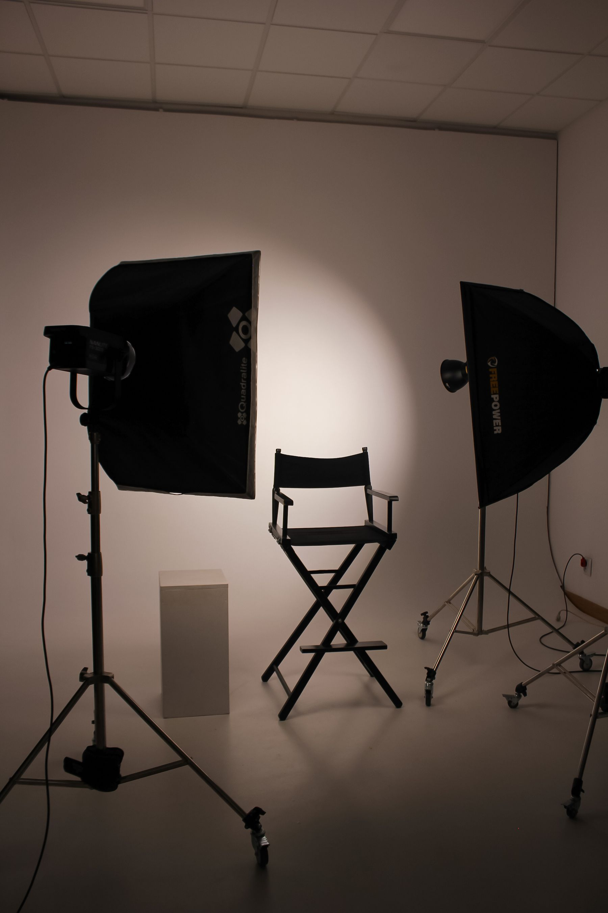
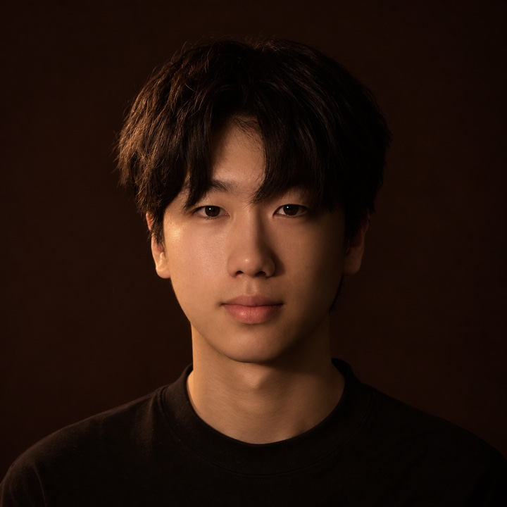

作品案例
《开机之前》是一组人物访谈策划练习。从桌上的第一个问题，到摄影机前的一次停顿，再到剪辑台上的取舍。配图均为选用的摄影参考。

我会请对方把时间线停在那里，再追问：“看了多少遍，你才决定剪这一刀？”
看这期采访怎么策划 ↗
数字媒体技术 · 人物 IP 内容策划
WANG JIAXUN
我有点慢热，聊到一个人怎么做事，问题就多起来了。
我来自石家庄，想做 IP 操盘手。我喜欢先听一个人讲一件小事，再从他的选择和犹豫里找选题。在《开机之前》这组练习里，我从摄影师最舍不得删掉的一个镜头问起，把这个问题写成提纲，也试着排了一遍镜头。
读《开机之前》的采访提纲 ↗《开机之前》是一组人物访谈策划练习。从桌上的第一个问题，到摄影机前的一次停顿，再到剪辑台上的取舍。配图均为选用的摄影参考。
开拍之前，先把“聊聊你的工作”缩小到一次具体的剪辑决定。输入人物和话题，生成提纲，再把问题改成自己的问法。
片场摄影参考 / Pexels